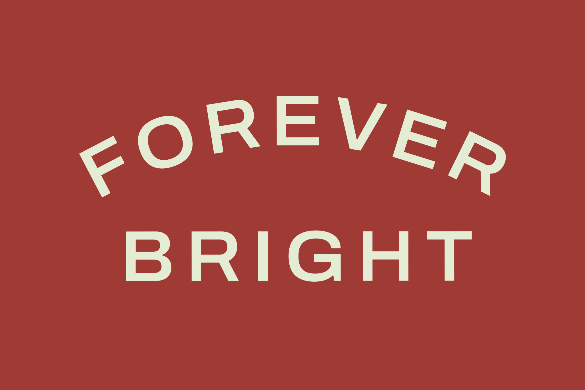
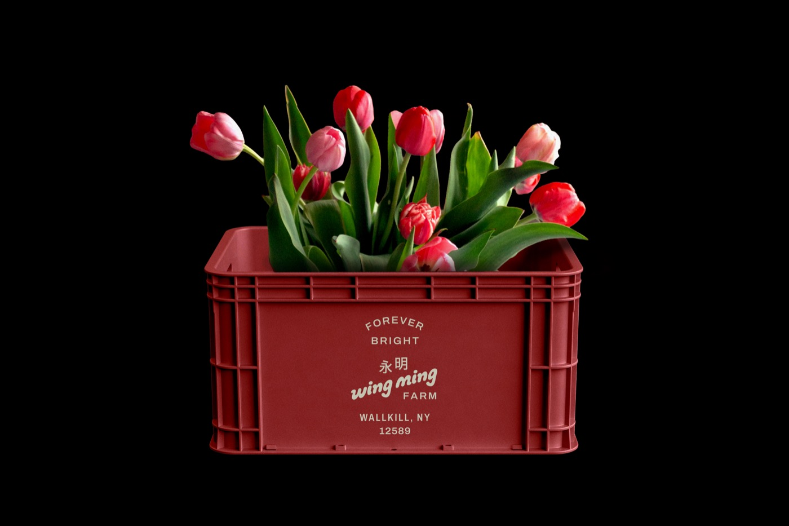

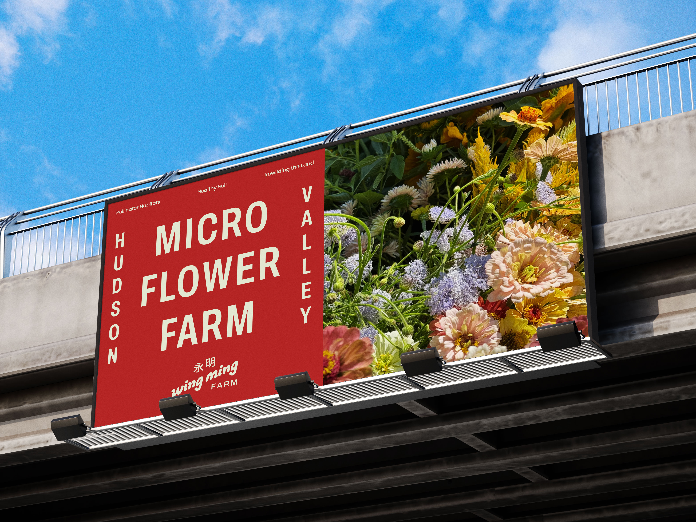
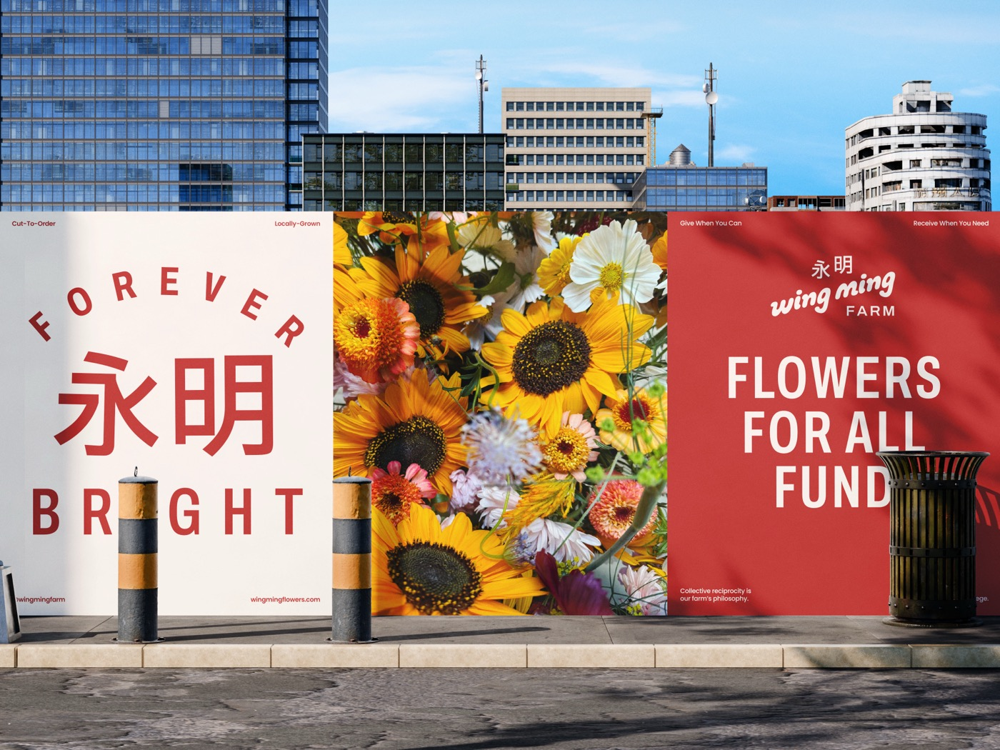
Brand Identity
Logo
Guidelines
Print
Web
Signage
Wing Ming is a flower farm and CSA rooted in the Hudson Valley. The owner grows, arranges and delivers flowers to the local community and beyond. Wing Ming means forever bright in Cantonese. Flowers are among the most fleeting things you can possess, and yet the feeling they leave behind stays with you. This tension is at the core of the brand system. There is an intentional playfulness to the logotype and a permanence to the layout, color and typographic approach.



The identity is considered enough to carry the weight of a serious craft and business, yet vital enough to reflect something that blooms and passes. The brand system was built to honor both sides without ignoring either one.
The work spans logo design, a full brand identity system, brand guidelines, print templates, production-ready assets, and art direction covering typography, color, and photography. A complete visual system, built to grow into from day one.
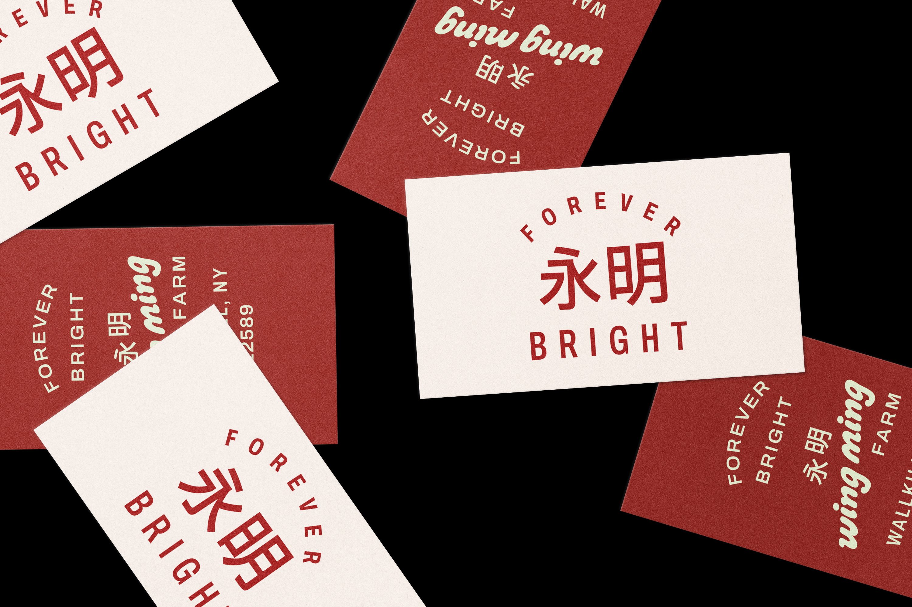
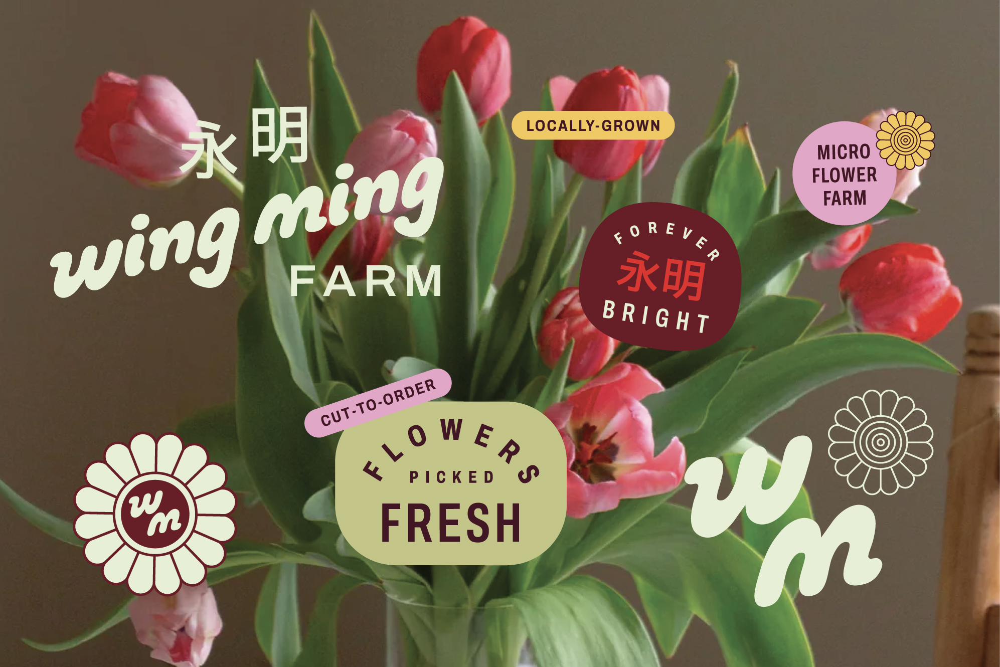
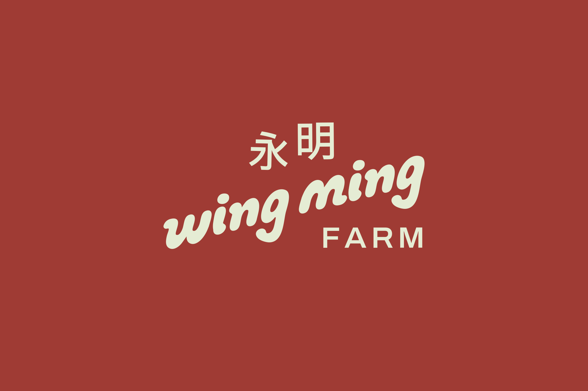

Placeholder copy for the knitted sign section.
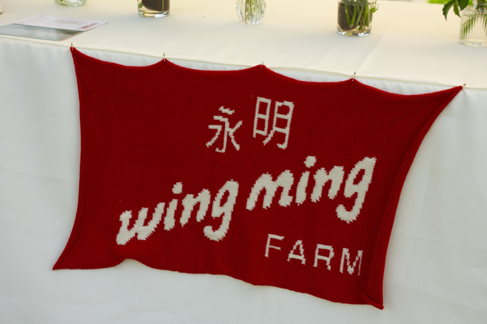
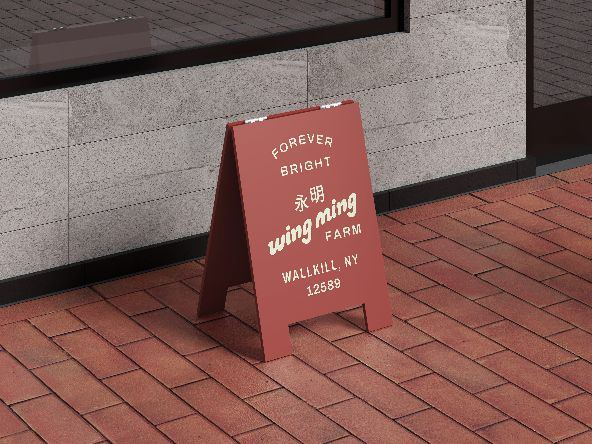
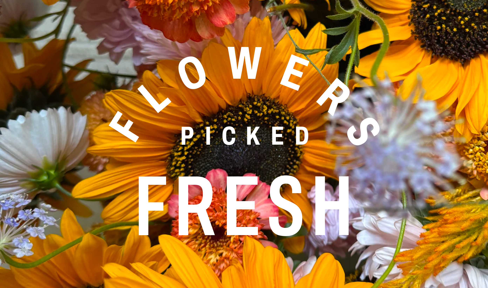
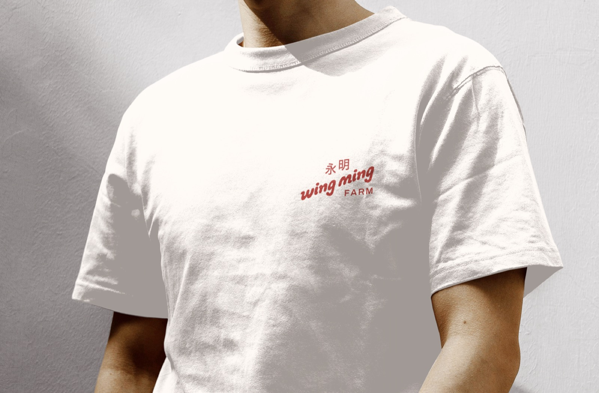

For the Adidas Adistar launch in Chinatown, Wing Ming supplied 250 seven-stem bouquets as give-aways, tucked into a bodega-style installation alongside boutique grocery and dry goods. A Hudson Valley flower farm, in the middle of New York City, alongside a global sneaker launch.